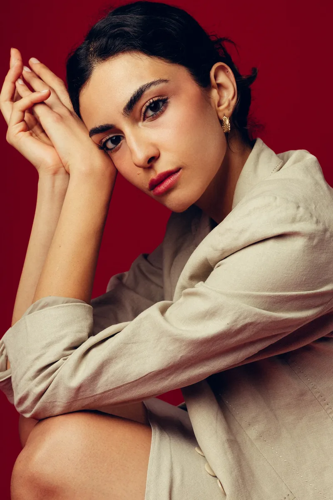

Elvin Kose

Elvin Kose is an actor born in Istanbul and based in London, with a career built equally on stage and screen.
Her theatre journey began in high school, where she first performed with the drama club and later came back to direct it. Around the same time, while at Robert College, she trained at Cihangir Atölye Sahnesi and Studio Oyuncuları under Şahika Tekand, sharpening her craft while staging two to three productions a year. Her love of theatre-making deepened through volunteer work touring cities across Turkey, running drama classes for socioeconomically disadvantaged children.
After high school, she moved to London to study at East 15 Acting School, where she trained intensively and appeared in a wide range of productions. It was there that she wrote her own play, Gallows and Children, and co-founded her theatre collective, Barbar Collective. Since graduating, she has toured London with the collective, brought Gallows and Children to the Camden Fringe, and continued performing it well beyond, most recently at The Space theatre. The show is still touring.
Her screen career began in her final year at East 15, when she shot Doğudan Fragmanlar (Fragments from the East), her first feature film. The film was selected for the official selection of the Golden Orange Film Festival and continues to travel the international festival circuit. Most recently, she wrapped Shy & Lola, a BBC television series directed by Sam Donovan.
When she isn't rehearsing or shooting, Elvin directs other productions, devises physical theatre pieces, and practices clowning in London.